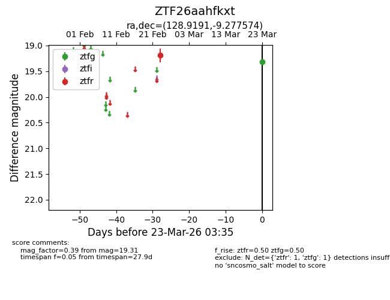
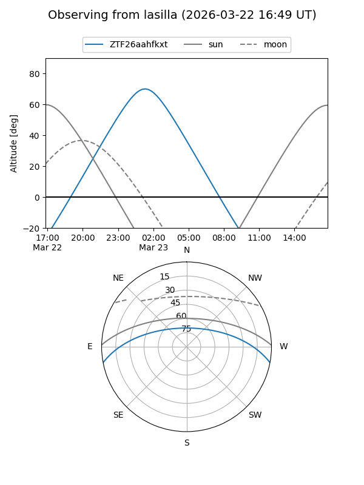
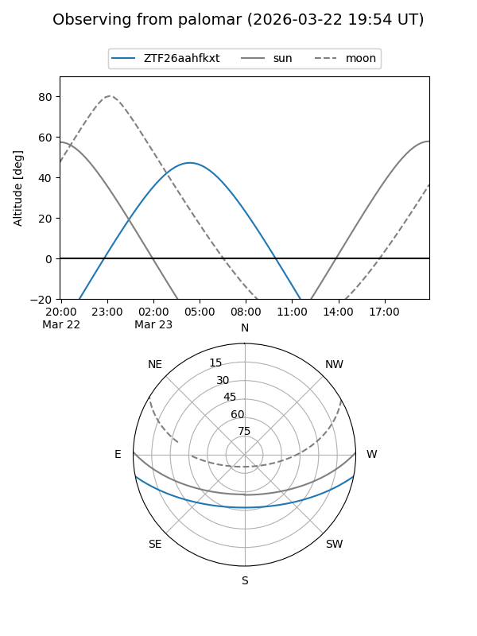

ZTF26aahfkxt
Target ZTF26aahfkxt at 2026-03-23 03:37
Aliases and brokers:
FINK: link
Lasair: link
ALeRCE: link
alt names
ZTF26aahfkxt (ztf,fink_ztf)
Coordinates:
equatorial (ra, dec) = 128.9191,-9.27757
equatorial (HMS+DMS) = 08:35:40.59,-09:16:39.27
galactic (l, b) = (233.9798,+18.20096)
Flags:
Photometry:
last ztfg=19.31, ztfr=19.19
1 ztfg, 1 ztfr detections
Lightcurve

Visibility


Additional plots